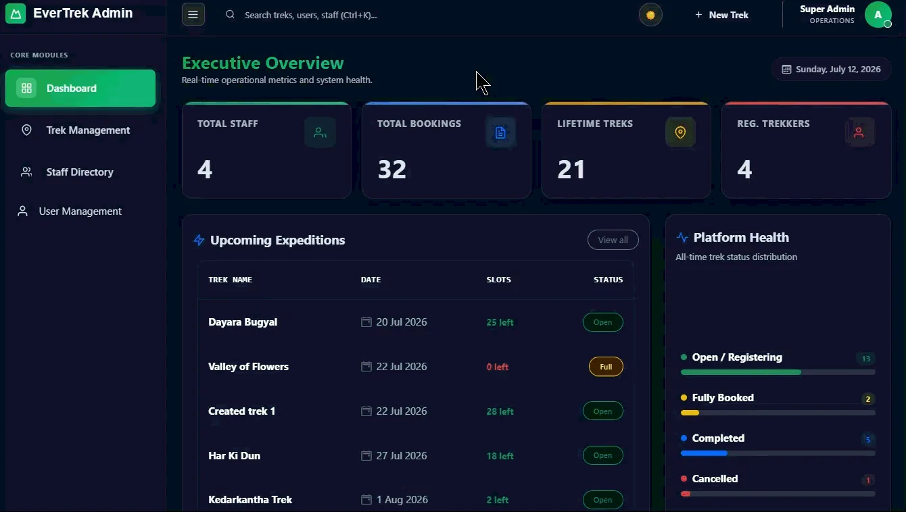

One place to run the whole trek
Trekking organizations often coordinate routes, guides, participant registrations, available slots, and booking records across spreadsheets, calls, and messages. EverTrek brings those operations into a single role-based application for Admins, Trek Staff, and Trekkers.
Built as a Modern Application Development II project, it connects a Vue.js frontend to modular Flask APIs, with SQLite for persistent records and Redis and Celery for caching and background work.
The core flow covers discovery, registration, booking, staff coordination, completion, and booking history. Reminders, reports, and exports support the work that happens around each trek.
Explore the application
Select a workflow to see the original application recording. Each demo starts as a still preview; animation loads only when you choose to play it.
Admin dashboard
An operational overview with platform statistics, trek management, staff assignments, and account controls.

Still preview. The original recording is approximately 43 MB.
Admin: coordinate operations
The admin dashboard presents platform statistics and trek availability. Admins can create, update, delete, and change the status of treks; create staff accounts; activate or blacklist staff; and assign guides to treks. Trekker management includes search, profile views, and activate/blacklist controls.
Trek Staff: manage assigned expeditions
Staff have a separate dashboard for their assigned treks. They can inspect participant lists, update available slots and trek status, and manage the transition from upcoming assignments to completed expeditions.
Trekker: discover, book, and keep a history
Visitors can browse the public discovery page before signing in. Registered trekkers can book available treks, manage their profile, review upcoming and past bookings, cancel bookings, and request a CSV booking-history export by email. Backend checks prevent duplicate bookings and validate available slots.
The architecture behind the experience
The application separates the interface, API, data model, and background tasks. Role-specific Vue views call Flask through Axios. API blueprints organize authentication, public discovery, admin, staff, and trekker operations.
- Vue.js 3 interfaceViews, reusable components, router and store.
- Axios + Flask APIJWT-authenticated requests and backend validation.
- SQLAlchemy + SQLiteUsers, treks, bookings and staff assignments.
- RedisCached API data, temporary OTPs and the task broker.
- Celery + BeatAsynchronous jobs and scheduled reminders or reports.
- Gmail SMTPHTML emails for verification, notifications and exports.
| Technology | Role in the project |
|---|---|
| Python / Flask | Backend language and REST API framework |
| SQLAlchemy / SQLite | ORM and relational storage |
| Vue.js 3 / Vue Router | Interactive frontend and role-specific navigation |
| Bootstrap 5 / Vite | Responsive styling and frontend development/build |
| Axios | Frontend-to-API requests |
| JWT / Werkzeug | Token-based authentication and password hashing |
| Redis | OTP storage, API caching and Celery broker |
| Celery / Celery Beat | Background work and daily/monthly schedules |
| Gmail SMTP | Email delivery |
| Git / GitHub | Version control and project management |
How the source code is organized
| Location | Responsibility |
|---|---|
backend/app.py | Application entry point and blueprint registration |
backend/models.py | SQLAlchemy models and relationships |
backend/routes/ | Auth, admin, staff, trekker and public API blueprints |
backend/tasks/ | Emails, reminders, reports and CSV exports |
backend/extensions.py | Database, JWT, Redis and CORS setup |
frontend/src/ | Vue router, store, Axios layer, views and components |
A relational model for trekking operations
The schema connects identity, trekking routes, bookings, and guide assignments. A role field on the user record distinguishes Admin, Staff, and Trekker accounts.
| Table | What it stores |
|---|---|
| User | Username, email, password hash, role, active state and account metadata |
| StaffProfile | Linked user ID, full name, phone and staff status |
| Trek | Name, location, difficulty, duration, available slots, status and dates |
| Booking | User and trek references, booking date, booking status and payment status |
| Trek Staff Association | Trek ID and staff ID for each assignment |
- User to StaffProfile: a staff account has one associated staff profile.
- User to Booking: one user can make many bookings.
- Trek to Booking: one trek can receive many bookings.
- StaffProfile to Trek: many-to-many assignments through the association table.
The booking record keeps booking status and payment status as separate fields. The report documents these fields without claiming integration with a payment gateway.
Authentication and background work
From registration to a protected action
Registration begins with an OTP email. After verification, the Trekker account is created. Login returns a JWT used for authenticated API requests. Role-based backend checks protect operations, while Vue Router provides the corresponding page navigation.
Werkzeug handles password hashing. Backend validation checks booking rules, including duplicate prevention and available slots. Role-specific interfaces make the relevant tools visible, with authorization enforced by the backend.
Work that can happen outside the request
Redis and Celery support email workflows, exports, reminders, and reports. These tasks can run in the background while the interface remains available for the next action.
| Trigger | Background workflow |
|---|---|
| Trekker registration | Send the account-verification OTP |
| Staff account creation | Send staff credentials by email |
| Booking-history export request | Generate CSV and email the export |
| Daily Celery Beat schedule | Send trek reminder emails |
| Monthly / admin reporting | Support report generation and delivery |
Redis also caches frequently requested API data and stores temporary OTPs. Gmail SMTP delivers the HTML emails. The frontend supports both light and dark themes and responsive Bootstrap layouts.
A closer look at the API
The report states that the project contains 36 API routes, documented separately in api.yaml in the submission. The six representative endpoints reproduced below show how authentication, public discovery, and administration are separated.
| Method | Endpoint | Purpose |
|---|---|---|
| POST | /api/auth/login | Authenticate a user and return a JWT |
| POST | /api/auth/register | Start Trekker registration and send an OTP |
| POST | /api/auth/verify-otp | Verify OTP and create the Trekker account |
| GET | /api/public/treks/ | Fetch treks for the public landing page |
| GET | /api/admin/dashboard/ | Fetch admin dashboard statistics |
| GET | /api/admin/treks/ | Fetch all treks |
6 of 6 endpoints shown.
No matching endpoints. Try “auth”, “GET”, or “treks”.
Project scope and takeaways
EverTrek connects the full application flow: a visitor discovers a trek, an authenticated user books a place, staff manage the assignment, and admins oversee operations. Background emails and history exports extend that flow beyond the dashboards.
The report describes testing each role's workflow and designing the application for reliable local execution and maintainability. It does not provide automated test counts, load-test results, or production uptime measurements.
The main engineering lesson is the value of clear boundaries: separate API blueprints, related database records, backend authorization, and independent background tasks make a multi-role application easier to reason about.
Project context and AI assistance disclosure
This was Aniket Pandey's Modern Application Development II project, completed while pursuing the final term at diploma level. The source report declares approximately 20% AI/LLM assistance using ChatGPT 5 for bug finding, code suggestions, UI/UX suggestions, documentation, comments, best practices, and formatting.
Report and project resources
This page adapts the four-page EverTrek project report and the application recordings supplied with it. The original PDF remains available for the submitted version.
{kind=link}